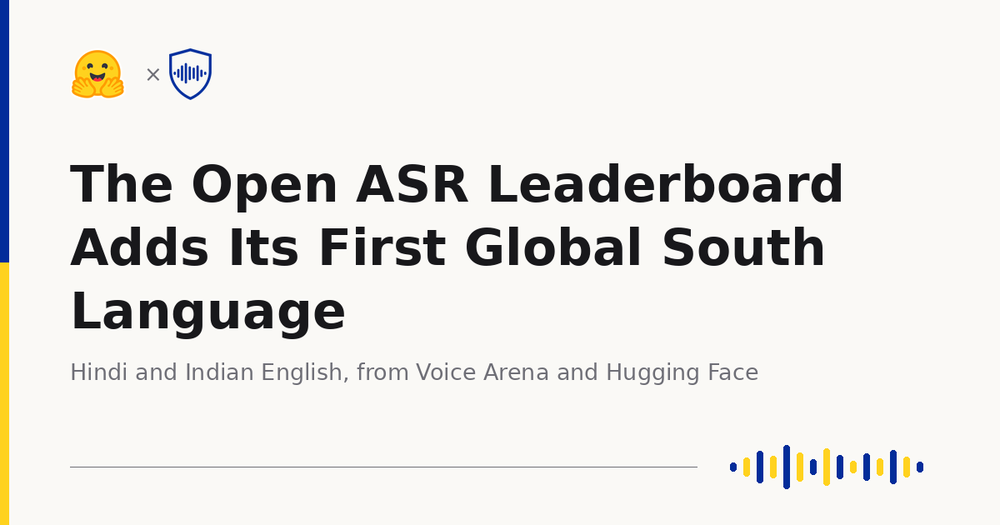
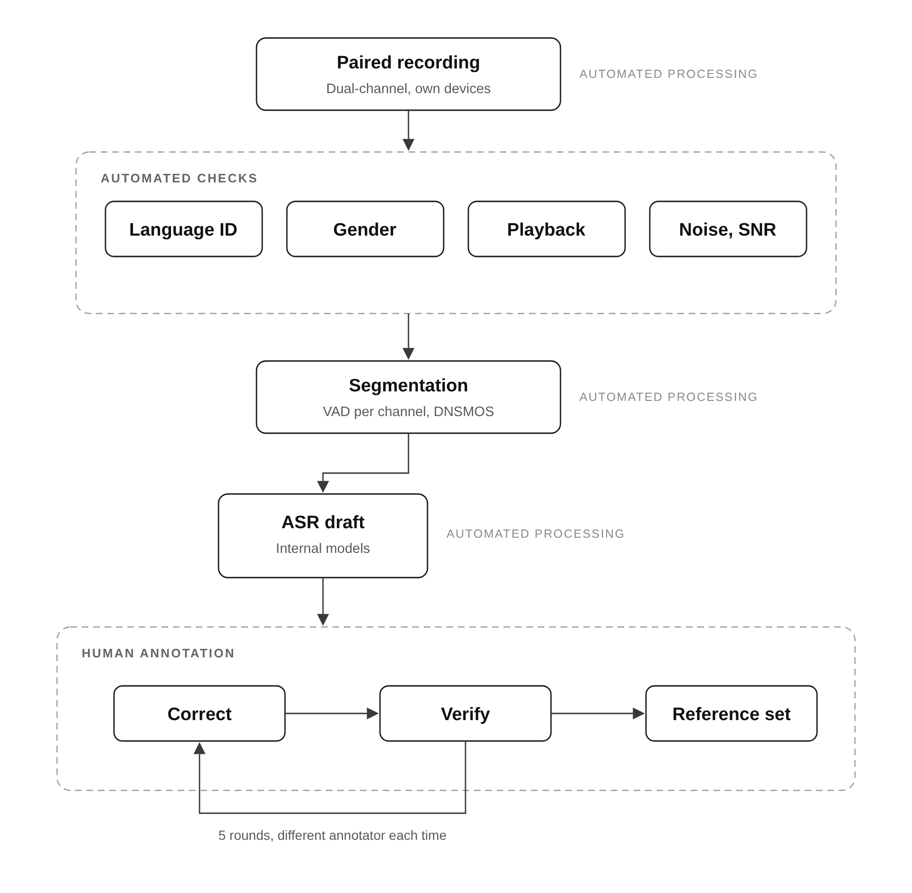
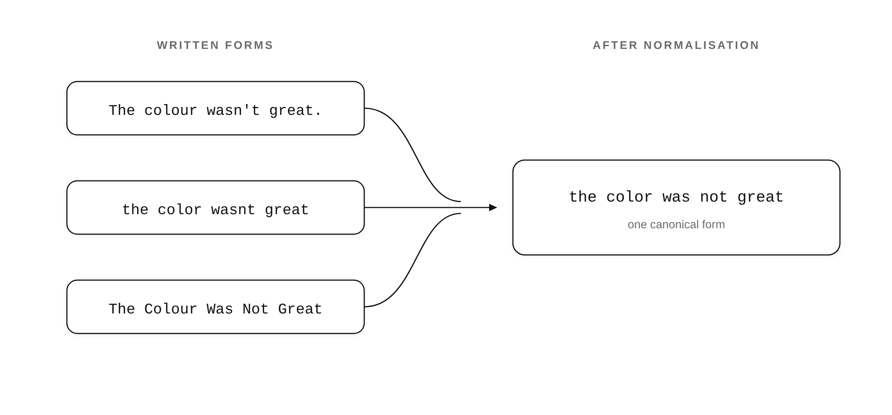

06 Hugging Face 게시일 2026.08.28
Hugging Face, 오픈 음성인식 평가에 힌디어 추가

벤치마크는 무엇을 잘 만들지 방향을 정한다. 음성인식도 마찬가지다. 이번 추가는 단순히 언어 하나를 늘린 일이 아니라, 누가 말했을 때 성능이 달라지는지 공개 평가에서 보이게 하려는 시도다.
핵심 브리핑
이 소식은 오픈 음성인식 평가가 영어권 중심에서 벗어나려는 작업이다. 목표는 평균 점수만 높인 모델보다, 다양한 화자에게 고르게 작동하는 모델을 가려내는 데 있다.
Hugging Face와 Voice Arena는 오픈 ASR 리더보드에 Monsoon en-IN과 Monsoon hi-IN 평가셋을 추가했다. 힌디어는 5억 명 이상이 쓰지만, 이번에야 오픈 ASR 리더보드에 처음 들어갔다. 두 언어 모두 공개 스플릿과 비공개 스플릿을 함께 제공한다. 공개 스플릿은 자가 채점에 쓸 수 있고, 비공개 스플릿은 벤치마크 맞춤 최적화를 줄이려고 숨겨 둔다.
네 개 스플릿은 화자가 서로 겹치지 않는다. 전체는 4,888명 화자로 구성했다. 각 화자에는 12개 속성을 기록했다. 세그먼트마다 총 18개 열이 있고, 이 가운데 12개가 메타데이터다.
이 평가셋은 음성이 쉽게 모이는 곳만 모으지 않았다. 수집 단계에서 9개 축이 달라지도록 설계했다. 지역, 나이, 성별, 어휘, 기기, 음향 환경, 발화 유형, 말속도, 같은 음성에 여러 정답 표기가 가능한지도 포함했다.
인도식 영어 공개 셋은 30개 주와 연방 직할지의 428개 출신 지구를 담았다. 힌디어 셋도 202개와 295개 지구를 아우른다. 녹음 기기는 부분집합마다 315개에서 582개 모델로 나뉜다. 어떤 단일 기기도 세그먼트의 2.1%를 넘지 않는다.
상위 10명 화자가 차지하는 전체 길이 비중은 2.8%에서 6.8% 사이다. 전체 화자의 절반 이상은 정확히 한 번만 나온다. 길게 녹음한 소수 화자에 점수가 끌려가지 않도록 설계한 셈이다.
힌디어는 표기 변형이 많아서 일반 문자열 정답만으로 채점하기 어렵다. 그래서 힌디어 셋은 lattice를 함께 제공한다. 전사문 각 구간마다 정답으로 인정할 수 있는 여러 표기를 넣어 둔 구조다.


스펙과 도입 조건
이번 발표는 모델이 아니라 평가셋 추가다. 도입 포인트는 성능 1등 모델을 고르는 일이 아니라, 우리 모델이 어떤 화자 집단에서 약한지 공개적으로 측정할 수 있다는 데 있다.
수집 방식도 눈여겨볼 부분이 있다. 참여자는 조용한 스튜디오가 아니라 자기 휴대전화와 자기 네트워크를 썼다. 실내와 실외 환경도 섞였다. 저사양 기기와 불안정한 대역폭이 오히려 데이터에 남아 있다. 실제 고객 환경과 더 닮은 조건이다.
참여자는 언어 숙련도 사전 심사를 거쳤다. 녹음 전에는 동의를 받았고 보상도 제공했다. 화자당 길이 상한도 언어별 인구 규모와 지리 분포에 맞춰 걸었다. 평가셋은 공개 스플릿과 비공개 스플릿으로 나뉘며, 둘의 지역 분포도 비슷하게 맞췄다.
업계의 움직임
아직 공개된 반응은 확인되지 않았다.
시사점과 체크포인트
금융권 음성 서비스는 평균 WER만으로 품질을 판단하기 어렵다. 콜센터 상담, 본인 확인, 음성 안내는 지역 억양, 기기 품질, 주변 소음에 따라 실패 양상이 달라질 수 있다.
우리 회사라면 다음을 따로 점검할 필요가 있다.
- 상담 음성에서 지역·연령·성별별 오류율 차이가 있는지
- 저사양 안드로이드 기기와 불안정한 통화 품질에서 성능이 급락하는지
- 숫자, 계좌, 지점명, 상품명 같은 고유명사에서 오류가 몰리는지
- 한국어 평가셋도 메타데이터를 충분히 남기고 있는지
이 발표는 데이터 양보다 분산 설계를 강조했다. 사내 음성 프로젝트도 총 녹음 시간만 늘리기보다, 다양한 화자와 환경을 먼저 채우는 편이 실서비스 검증에 더 맞을 수 있다. 다만 이번 발췌에는 실제 리더보드 결과 수치와 참여 모델 목록은 없다.
주요 용어
원문 정보
제목: The Open ASR Leaderboard Adds Its First Global South Language
게시일: 2026.08.28
출처 URL: https://huggingface.co/blog/open-asr-leaderboard-global-south